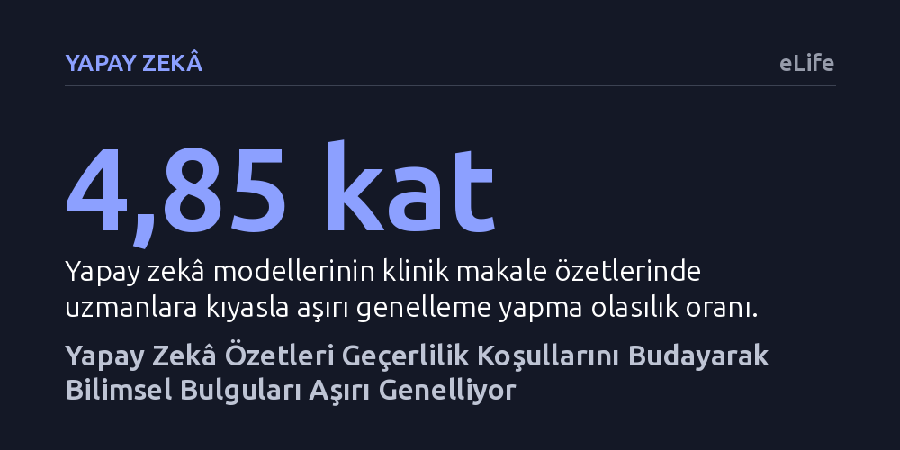

YAPAY-ZEKA · eLife · 2026-10-21
Çalışma, yapay zekâ modellerinin bilimsel makaleleri özetlerken bağlamı ve bulguların geçerlilik sınırlarını ne ölçüde koruyabildiğini inceledi. Modellerin uzmanlara kıyasla yaklaşık beş kat daha fazla aşırı genelleme yaptığı ve taranan kaynak sayısı arttıkça iddiaların metin içi dayanağının yüzde 42 oranında zayıfladığı saptandı.
Yapay zekânın ürettiği akıcı ve derli toplu bilimsel özetlerin, bulguların hangi özel şartlarda geçerli olduğunu sessizce silerek araştırmacıları yanlış çıkarımlara sürükleyebileceğini gösteriyor.

Bilimsel bilgi her yıl yaklaşık yüzde 4 oranında büyüyor ve kabaca 17 yılda bir ikiye katlanıyor. Araştırmacıların en kıt kaynağı olan insan dikkati bu devasa literatür dalgası karşısında yetersiz kaldığında, makaleleri saniyeler içinde tarayıp özetleyen yapay zekâ sistemleri eşsiz bir kurtarıcı gibi sunuluyor. Ancak yazarlar, Douglas Adams'ın ünlü "Otostopçunun Galaksi Rehberi" romanındaki klasik fıkrayı hatırlatarak temel bir tehlikeye işaret ediyor: Bir süper bilgisayar "Hayat, Evren ve Her Şeye Dair Nihai Soru" için milyonlarca yıl çalışıp "42" cevabını üretir; fakat kimse asıl soruyu hatırlamaz. Sorusu ve bağlamı kaybolmuş bir yanıt eylemsizdir; doğrulanamaz ve güvenle kullanılamaz.
Günümüz büyük dil modelleri de benzer bir yapısal açmazla karşı karşıyadır. Bilimsel makaleler makinelerin taraması için değil, insanların birbirine karmaşık ve koşullu fikirleri aktarması için kaleme alınır. Yapay zekâ bir araştırmayı özetlerken metni kısalttıkça, o bulgunun hangi koşullarda geçerli olduğunu belirten kısıtlamaları budar. Sonuçta ortaya son derece akıcı, kendinden emin ama sorusundan ve dayanaklarından koparılmış bir yanıt çıkar. İşte "42 problemi", cevabın yanlış olmasından değil, bağlamını yitirdiği için anlamsızlaşmasından kaynaklanır.
Çalışmada araştırmacılar, özetleme sürecinin sınırlarını anlamak için mevcut geniş ölçekli deneysel çalışmaları bir araya getirdi. Analiz edilen ampirik zemin; 4.900 yapay zekâ özetinin özgün bilimsel makalelerle karşılaştırıldığı çalışmaları, hekimlerin klinik metin özetleri üzerindeki kör değerlendirmelerini ve 14 farklı dil modelinin kaynak tarama performansını ölçen bağımsız testleri kapsıyor.
Bu verilerden yola çıkan yazarlar, bir özetin uzunluğu ile değeri arasındaki ilişkiyi kuramsal bir modelle formüle etti. Bir sentez kısaldıkça okuyucunun harcadığı dikkat emeği düşer ve ilk aşamalarda verimlilik artar. Ancak metin kısaldıkça, bulgunun geçerlilik koşulları tek tek kaybolur. Metin belirli bir kritik eşiğin altına indiğinde, bilginin kullanılabilirliği yavaşça azalmak yerine aniden çöker; yani bir uçurumdan aşağı yuvarlanır. Kapsam koşullarından arındırılmış bir iddia artık zayıf bir iddia değil, bambaşka ve yanıltıcı bir iddiadır. Üstelik bu kritik uçurumun konumu okurun uzmanlığına ve aradığı soruya göre değiştiği için, herkes için geçerli tek bir ideal özet uzunluğu tanımlanamaz.
İncelenen veriler, yapay zekânın bilimsel metinleri özetlerken belirgin bir aşırı genelleme eğilimi gösterdiğini ortaya koyuyor. Yapılan geniş kapsamlı bir çalışmada, klinik makaleleri özetleyen dil modellerinin uzmanlara kıyasla yaklaşık beş kat daha fazla (4,85 kat olasılık oranıyla) aşırı genelleme yaptığı ve modellerin özetlerinin yüzde 26 ila 73'ünde bulguları haksız yere genişlettiği saptandı. Model metne doğrudan yanlış bilgi eklemese bile, özgün çalışmanın sınırlarını sessizce silerek dar bir bulguyu evrensel bir gerçekmiş gibi sunuyor.
Daha da sarsıcı bir bulgu, derin araştırma ajanları olarak çalıştırılan 14 dil modelinin incelenmesinde ortaya çıktı. Bu modellerin bağlantı geçerliliği yüzde 94'ün, konuyla ilgisi ise yüzde 80'in üzerinde olmasına rağmen, atıf yapılan cümlenin kaynak tarafından fiilen desteklenme oranı yalnızca yüzde 39 ile 77 arasında kaldı. Dahası, yapay zekânın taradığı kaynak sayısı 2'den 150'ye çıkarıldığında, iddiaların metin içi kanıt desteği yaklaşık yüzde 42 oranında geriledi. Başka bir deyişle, daha fazla literatür taramak daha doğrulanabilir bir özet üretmedi; yalnızca altı boş ve tutarsız daha fazla atıf türetti.
Asıl büyük tehlike, belirli bir dar amaç için üretilmiş bir makine özetinin zamanla bağlamından koparak başka alanlara taşınmasıdır. Örneğin bir araştırmacının literatür tararken hızlıca göz atmak için ürettiği kaba bir özet, ileride bir araştırma projesine, klinik uygulama kılavuzuna veya hibe başvurusuna kaynaklık edebilir. Tarihsel atıf ağı analizleri, geçmişte tek bir iddianın koşulsuz tekrarlanması yoluyla yanlış hipotezlerin kabul edilmiş gerçeklere dönüştüğünü ve fonlanan hibe başvurularının neredeyse tamamında gerekçe yapıldığını belgeliyor. Yapay zekâ, insanlarda zaten var olan bu yanıltıcı atıf döngüsünü katbekat hızlandırma potansiyeline sahiptir.
Yazarlar, bu sorunun dil modellerinin düzyazı kalitesini artırarak çözülemeyeceğini savunuyor; zira sorun üslupta değil, eksilen bağlamdadır. Çözüm, yapay zekâ araçlarının ürettikleri özetlerde bağlamın ne kadarının geri kazanılabileceğini açıkça raporlamasından geçiyor. Bunun için üç temel ölçüt öneriliyor: İddiaların ne kadarının kaynağa bağlandığı (kapsam), kaynağın içindeki ilgili pasaja ulaşmanın ne kadar kolay olduğu (derinlik) ve kaynak metnin iddiayı gerçekten destekleyip desteklemediği (dayanak). Tıpkı tıp dergilerinin insan yazarlardan eksiksiz atıf talep etmesi gibi, yapay zekâ araçlarından da bu izlenebilirlik standartları talep edilmelidir.